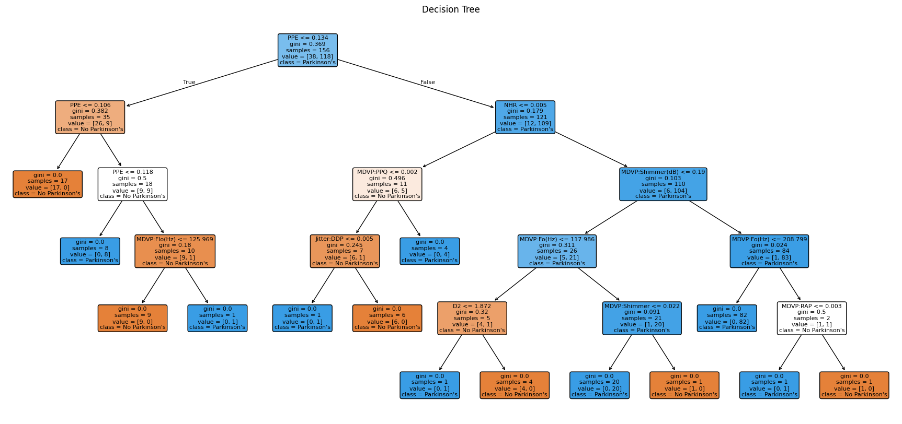
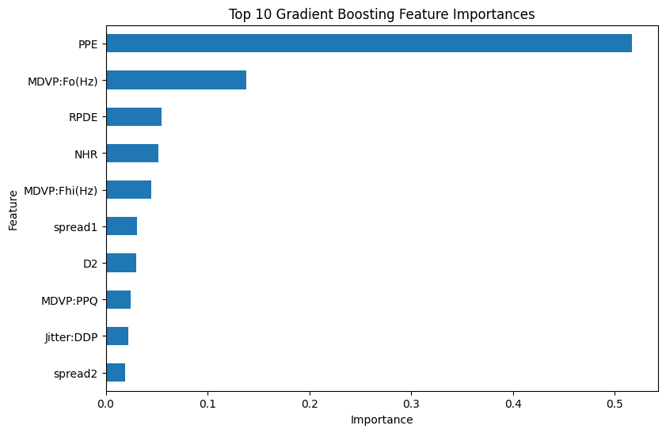
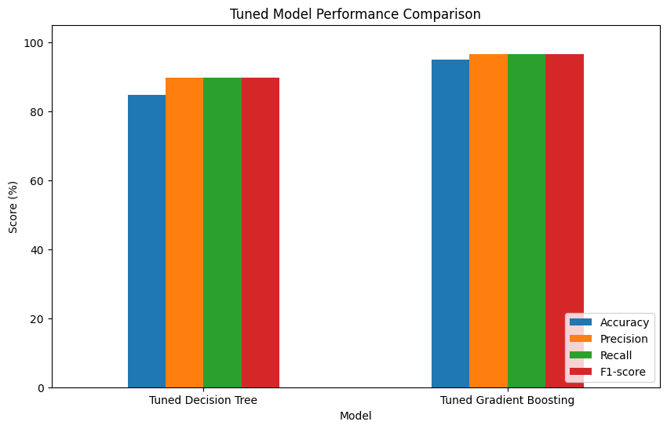
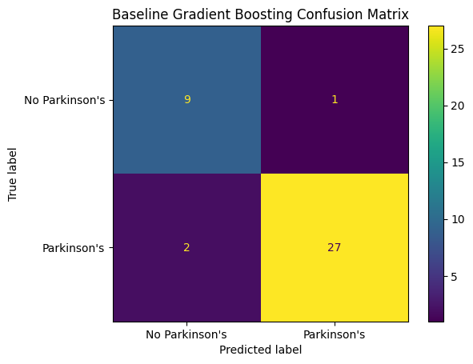
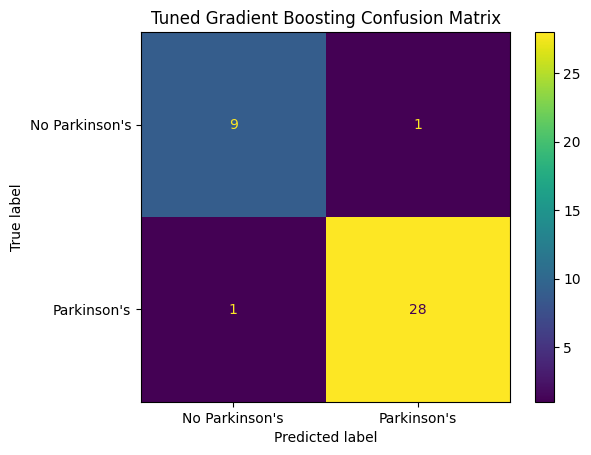

AI & DATA ENGINEERING / MACHINE LEARNING
Parkinson's Disease Prediction Using Machine Learning.
Exploring how supervised classification models can identify patterns associated with Parkinson's disease status. I prepared a dataset, trained and tuned two models, and compared their performance on a held-out test set.
01 / PROJECT OVERVIEW
The problem.
Machine learning can be used to investigate whether measured features help distinguish records labelled with and without Parkinson's disease. This project focuses on building a reproducible classification workflow and evaluating the trade-offs between model performance and interpretability.
The work is an educational machine learning exercise, not a medical diagnostic system.
02 / DEVELOPMENT
From data to models.
01 / Data preparation
Explored the dataset, checked missing values and duplicates, prepared the input features, and created training and test subsets.
02 / Decision Tree
Trained an interpretable baseline classifier, examined overfitting and tuned its parameters.
03 / Gradient Boosting
Built an ensemble of decision trees to model more complex patterns and compared it with the Decision Tree.
04 / Evaluation & tuning
Used GridSearchCV with five-fold cross-validation and F1-based model selection. Evaluated accuracy, precision, recall, F1-score and confusion matrices.
Visualising the models


03 / RESULTS
Model comparison.
The tuned Gradient Boosting classifier was selected based on F1-score. Its reported holdout results are shown below.
| Selected model | Accuracy | Recall | F1-score |
|---|---|---|---|
| Tuned Gradient Boosting | 94.87% | 96.55% | 96.55% |
These scores are specific to the notebook's dataset and evaluation split. They do not establish real-world clinical reliability or suitability for diagnosis.

Before and after tuning
The baseline Gradient Boosting model correctly classified 36 of 39 test records; the tuned model correctly classified 37 of 39. The number of missed Parkinson’s-labelled records decreased from two to one.


04 / TOOLS & LEARNING
What I learned.
This project strengthened my understanding of supervised learning, model complexity, overfitting, hyperparameter search and the importance of comparing more than accuracy alone. It also gave me practical experience communicating evaluation results and model limitations.
← Back to all projects